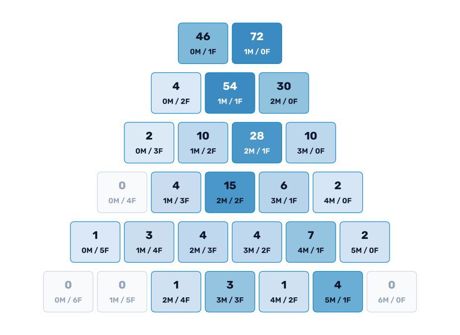
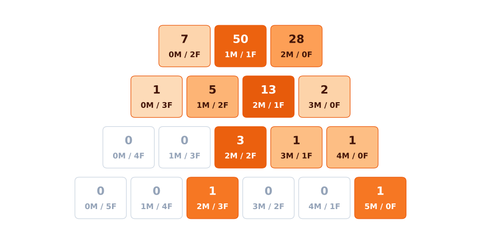
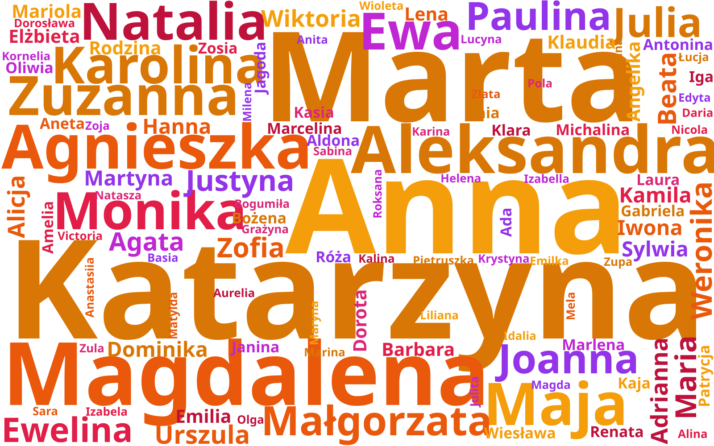

The Crown of Warsaw
20 August 2026
Recently, I stumbled across an interesting website which lists people climbing the Crown of Warsaw 1. Apparently, in Warsaw there are hills people like to climb and receive an award for.
Background
Warsaw is quite flat since it lies in the middle of Poland. It has interesting cliffs along the Vistula River (which are actually quite steep and long), but surely not mountains. There are, however, a few hills which stand out in the landscape of Warsaw, to be more precise, 6 of them:
- Górka Szczęśliwicka (152 m n.p.m.)
- Wzgórze Trzech Szczytów (133,9 m n.p.m.)
- Kopiec Moczydłowski (130 m n.p.m.)
- Kopiec Powstania Warszawskiego (121 m n.p.m.)
- Kopa Cwila (108 m n.p.m.)
- Góra Gnojna (101 m n.p.m.)
Those are not really high points, but the view from them is quite beautiful.
In 2023, the aforementioned website was created, and from that moment, people who prove that they climbed all 6 hills can receive a metal pin. Two types are possible to obtain: one for the summer climb and one for the winter approach 2. Many people got interested.
The Data
Since 2023, there has been a public record of people who have received the pin. It is called the Conquerors List. The list includes the Name and Surname, Conqueror ID (summer and winter separately), and City of Origin. However, in the source file, one can also spot the Date, which I have assumed to be the date of climbing the last hill or uploading the photos for verification. There are around 1,000 people as of August 2026, and here is the analysis.
Timeline
Let us first take a look at the time distribution of the climbers. In the plot below, we show all the climbers on the weekly calendar. The darker shade of blue means more people have finished climbing on that day.

There are no obvious patterns visible. However, there are a few spots worth commenting on. First is January and February 2026, where there are significantly more people climbing. This was caused by unusual weather with lots of snow and freezing temperatures. I guess that many people wanted to get the winter challenge medal, and it is rather rare in Warsaw to get snow for such a long time, so many people used this opportunity.
The most interesting day is February 14th, 2026, when more than 40 people climbed the hills, 37 of whom were scouts from Piaseczno (a city near Warsaw). We can see this since they put their organization as their place of origin :) To date, this is the biggest organized group which has climbed those hills (and they skew any statistical test...).
Social structures
Now let's take a look at the social structures hidden in the data. Let us first have a look at the gender distribution, but with distinctions based on the total number of climbers on a given day. The picture below shows the different combinations of F/M for a fixed number of climbers a day (in a row).

Most days where there is a single record (solo climbers) are male. However, for the days where there are only two people climbing, almost two-thirds are a female-male pair. The pattern holds for 3 and 4 people too. For three people, we see male dominance (2M/1F), but for 4 people, once again the most common combination is equally spread (2M/2F). For more people, there is not enough data to make confident predictions.
My hypothesis is that climbing is mostly a male activity, but it is also a couple/family activity. I'm only talking about statistics here, and it could happen that two single climbers did it on the same day. So we are not sure about dates or romantic couples. But we are more certain about families, since they share the same surname!
In the figure below, I have exactly the same plot as before, but limited to families only. Let's take a look at the statistical distribution of Polish families climbing the Crown of Warsaw.

We can see a similar pattern—families who are climbing are mostly equal, with a skew towards more males.
Geography
Let us also have a look at the geography of the climbers. Below, we present a map of Poland divided into powiats. We can see that the majority of people are from Warsaw city. Nearby cities also have lots of participants. We can also spot tourists coming from all around Poland. Note that the map is on a logarithmic scale, so the color changes multiplicatively and not linearly. Otherwise, there would be nothing visible outside of Warsaw.
Names
Finally, we can take a look at the names of the climbers. Below, we present the word clouds for the first names of all recorded climbers divided by gender. The bigger the name is, the more frequently it appears in the data. Color does not play any role here; it is purely for the visual aspect.

We can see that for the male names, Michał and Piotr dominate the word cloud. For females, there are no obvious main names, but 4 names are more or less equal: Katarzyna, Anna, Marta, Magdalena. This distribution can give us some insights into the age structure of the people. But this is outside the scope of this post.
Summary
I really like the concept of the Crown of Warsaw. Even though it is only symbolic, it gives people who can't travel far an opportunity to satisfy their adrenaline drive! It's good to see that many people were not afraid of winter climbing, and it's nice to see families and couples climbing, as I believe it is quality time. I was kind of surprised seeing that many people from abroad, but hey—nice to see a good tourist attraction close to me. One day, I hope to be on the list as well.
Footnotes
-
Where winter is defined by the snow layer and not by the season. ↩